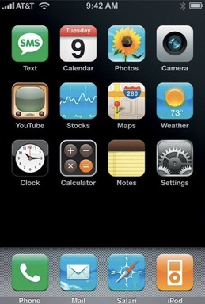

History of Opreating systems
1. Main Frames
Mainframes are computers known for their large size, amount of storage, processing power and high level of reliability. They are primarily used by large organizations for mission-critical applications requiring high volumes of data processing. In general, there are a few characteristics of mainframes that are common among all mainframe vendors: Nearly all mainframes have the ability to run (or host) multiple operating systems. Mainframes can add or hot swap system capacity without disruption. Mainframes are designed to handle very high volume input and output (I/O) and emphasize throughput computing. A single mainframe can replace dozens or even hundreds of smaller servers.
2. UNIX

The origins of Unix date back to the mid-1960s when the Massachusetts Institute of Technology, Bell Labs, and General Electric were developing Multics, a time-sharing operating system for the GE-645 mainframe computer. Multics featured several innovations, but also presented severe problems. Frustrated by the size and complexity of Multics, but not by its goals, individual researchers at Bell Labs started withdrawing from the project. The last to leave were Ken Thompson, Dennis Ritchie, Douglas McIlroy, and Joe Ossanna, who decided to reimplement their experiences in a new project of smaller scale. This new operating system was initially without organizational backing, and also without a name.
3. Xerox Alto

The Xerox Alto is the first computer designed from its inception to support an operating system based on a graphical user interface (GUI), later using the desktop metaphor. The first machines were introduced on 1 March 1973, a decade before mass-market GUI machines became available. The Alto is contained in a relatively small cabinet and uses a custom central processing unit (CPU) built from multiple SSI and MSI integrated circuits. Each machine cost tens of thousands of dollars despite its status as a personal computer. Only small numbers were built initially, but by the late 1970s, about 1,000 were in use at various Xerox laboratories, and about another 500 in several universities. Total production was about 2,000 systems.
(1973) Xerox Alto was not a commercially very successful, his proposal, but affected the whole generation of computers and operating systems. It was the first computer using a mouse and a fully graphical interface.
4. Apple II

The Apple II (stylized as apple ][) is an 8-bit home computer and one of the world's first highly successful mass-produced microcomputer products, designed primarily by Steve Wozniak (Steve Jobs oversaw the development of the Apple II's foam-molded plastic case and Rod Holt developed the switching power supply). It was introduced by Jobs and Wozniak at the 1977 West Coast Computer Faire and was the first consumer product sold by Apple Computer, Inc. It is the first model in a series of computers which were produced until Apple IIe production ceased in November 1993.The Apple II marks Apple's first launch of a personal computer aimed at a consumer market—branded toward American households rather than businessmen or computer hobbyists.
Apple II became one of the first massively expanded home computers.
5. MS-DOS

MS-DOS is an operating system for x86-based personal computers mostly developed by Microsoft. Collectively, MS-DOS, its rebranding as IBM PC DOS, and some operating systems attempting to be compatible with MS-DOS, are sometimes referred to as "DOS" (which is also the generic acronym for disk operating system). MS-DOS was the main operating system for IBM PC compatible personal computers during the 1980s, from which point it was gradually superseded by operating systems offering a graphical user interface (GUI), in various generations of the graphical Microsoft Windows operating system.
6. Windows 3.1x

Windows 3.1x is a series of 16-bit operating environments produced by Microsoft for use on personal computers, released on April 6, 1992. The series began with Windows 3.1, which was first sold during April 1992 as a successor to Windows 3.0. Subsequent versions were released between 1992 and 1993 until the series was superseded by the Windows 9x series starting in 1995 with Windows 95. During its lifespan, Windows 3.1 introduced several enhancements to the still MS-DOS-based platform, including improved system stability, expanded support for multimedia, TrueType fonts, and workgroup networking.Official support for Windows 3.1 ended on December 31, 2001
7. iOS
The 2007 iPhone known as the iPhone 2G, the first iPhone, and iPhone 1 after 2008 to differentiate it from later models is the first smartphone designed and marketed by Apple Inc. After years of rumors and speculation, it was officially announced on January 9, 2007 and was later released in the United States on June 29, 2007. It featured quad-band GSM cellular connectivity with GPRS and EDGE support for data transfer.
8. Windows 7

Windows 7 is an operating system that was produced by Microsoft and released as part of the Windows NT family of operating systems. It was released to manufacturing on July 22, 2009, and became generally available on October 22, that year. It is the successor to Windows Vista, released two years prior. Windows 7's server counterpart, Windows Server 2008 R2, was released at the same time.
9. Chrome OS

Chrome OS is a Linux kernel-based operating system designed by Google. It is derived from the free software Chromium OS and uses the Google Chrome web browser as its principal user interface.Google announced the project in July 2009, conceiving it as an operating system in which both applications and user data reside in the cloud: hence Chrome OS primarily runs web applications. Source code and a public demo came that November. The first Chrome OS laptop, known as a Chromebook, arrived in May 2011. Initial Chromebook shipments from Samsung and Acer occurred in July 2011.
10. Windows10

Windows 10 is a series of operating systems produced by the American multinational technology company Microsoft and released as part of its Windows NT family of operating systems. It is the successor to Windows 8.1 (2013), released nearly two years earlier, and was released to manufacturing on July 15, 2015, and broadly released for the general public on July 29, 2015. Windows 10 was made available for download via MSDN and Technet and available as a free upgrade for retail copies of Windows 8 and Windows RT users via the Windows Store. Windows 10 receives new builds on an ongoing basis, which are available at no additional cost to users, in addition to additional test builds of Windows 10 which are available to Windows Insiders. Devices in enterprise environments can receive these updates at a slower pace, or use long-term support milestones that only receive critical updates, such as security patches, over their ten-year lifespan of extended support.